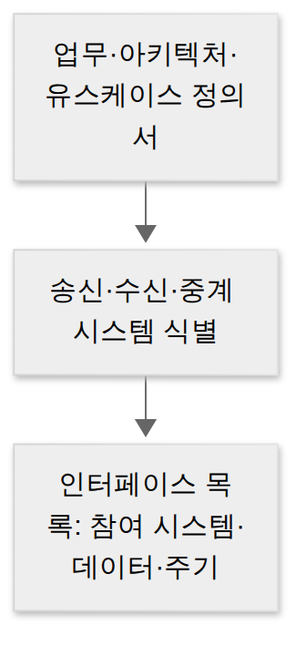

D015 · 인터페이스 요구사항 확인 · 대상 식별 — 내·외부 인터페이스와 인터페이스 시스템
A4 A3에서는 부품(모듈·객체)을 잘 만드는 법을 봤어요. 오늘부터는 그 부품이 다른 시스템과 대화하는 규칙, 즉 인터페이스를 봐요. 요즘 시스템은 결제사·국세청·배송사처럼 남의 시스템과 주고받는 일이 업무의 절반이라, 시험도 이 “대화 규칙”을 꽤 자세히 물어요.
- 내부 인터페이스와 외부 인터페이스를 상황에서 구별할 수 있다
- 인터페이스 요구사항의 구성 7항목과, 요구공학에서 이를 확인·검증하는 단계를 설명할 수 있다
- 인터페이스 시스템의 송신·중계·수신과 연계 방식(직접 vs 간접, 실시간 vs 배치)을 구별할 수 있다
1. A4 지도 — 오늘 위치
2. 인터페이스란
새 주문 시스템을 만든다고 해 볼게요. 결제는 PG사, 세금계산서는 국세청, 배송은 물류사 시스템과 주고받아야 해요. 이 시스템들은 각자 다른 회사가 다른 기술로 만들었어요.
그래서 우리 쪽 코드가 아무리 깔끔해도, 상대가 기대하는 필드 이름이나 날짜 형식이 다르면 데이터가 조용히 버려져요. 이런 사고를 막으려고 “어떻게 접속하고 무엇을 주고받을지”를 미리 규칙으로 정해 두는 게 인터페이스 설계예요.
규칙에는 늘 네 가지가 들어가요. 무엇을(데이터), 어떻게(방식), 언제(주기), 그리고 안 되면(오류 처리). 연계를 붙이는 순간 상대 시스템의 장애도 같이 넘어오기 때문에, 마지막 항목을 빼먹으면 새벽 알람이 대신 알려 줘요.
3. 내부 인터페이스 vs 외부 인터페이스
내부 인터페이스는 우리가 개발하는 시스템 안의 모듈·컴포넌트끼리 정한 규칙이에요. 화면 모듈이 업무 로직을 부르거나, 업무 계층이 데이터 접근 계층을 거쳐 DB를 읽는 것이 여기 속해요. 양쪽을 우리가 다 고칠 수 있어서, 규칙을 바꾸고 싶으면 같은 커밋에서 같이 고치면 돼요.
외부 인터페이스는 우리 시스템과 바깥 시스템 사이의 규칙이에요. 회계 시스템이 국세청 시스템으로 세금계산서를 보내거나, 주문 시스템이 PG사에 결제를 요청하는 것이 여기 속해요. 상대를 우리 마음대로 고칠 수 없으니, 명세를 꼼꼼히 쓰고 서로 합의한 뒤 검증해야 해요.
예: 화면 ↔ 업무 로직, 업무 계층 ↔ 데이터 접근 계층
양쪽을 우리가 고칠 수 있음
예: 회계 ↔ 국세청, 주문 ↔ PG사
상대를 통제할 수 없어 합의·검증 필수
4. 인터페이스 요구사항 — 문서에 적는 7항목
앞에서 본 “접속 방법이나 규칙”을 실제 요구사항 문서로 옮기면 아래 7항목이 돼요. 항목마다 “이게 빠지면 무슨 일이 생기나”를 같이 보면 이름만 외울 때보다 오래 남아요.
| 항목 | 적는 내용 | 빠지면 생기는 일 |
|---|---|---|
| 인터페이스 이름 | 이 규칙의 식별자 | 문서·코드·로그에서 이름이 달라 추적이 끊김 |
| 연계 대상 시스템 | 누구와 주고받나 | 보낼 곳이 정해지지 않아 테스트 불가 |
| 연계 범위 및 내용 | 무엇을 하고 무엇은 안 하나 | 책임 경계 다툼 |
| 연계 방식 | 직접/중계, 실시간/배치 | 양쪽이 다르게 구현해 첫 연동부터 실패 |
| 송신 데이터 | 항목·타입·길이 | 필드 누락이 곧 운영 장애 |
| 인터페이스 주기 | 언제·얼마나 자주 | 받는 쪽이 언제 올지 몰라 대기 |
| 기타 고려사항 | 보안·오류 처리·제약 | 장애 대응이 그때그때 즉흥적으로 결정됨 |
요구사항은 다시 두 갈래로 나눠요. 기능적 요구사항은 연계로 수행할 기능 자체에 관한 것이고, 특성은 기능성·완전성·일관성이에요. 비기능적 요구사항은 성능·보안·신뢰도처럼 시스템 전반에 걸린 것이고, 특성은 신뢰성·사용성·효율성·유지보수성·이식성이에요.
5. 요구공학 — 적은 문서는 마지막에 확인·검증
7항목을 언제 어떻게 만들어 내고 점검할까요? 이건 요구사항 전체를 다루는 요구공학의 흐름을 그대로 따라가요. 네 단계는 이래요.
인터뷰·워크숍·설문
자연어 / 정형 표기
맞는지 되짚음
순서가 이렇게 되는 이유는 단순해요. 모으고, 정리하고, 적어야 비로소 “적은 게 맞나?”를 따질 수 있으니까요. 검증이 앞에 오면 아직 아무것도 안 적었는데 검사하는 셈이에요.
④ 확인·검증 단계는 다시 네 가지를 차례로 점검해요. 인터페이스는 문서 안에서 완벽해 보여도 상대 시스템과 실제로 맞물려야 의미가 있어서, 맨 마지막에 놓여요.
- 요구사항 목록 확인
- 요구사항 정의서 작성 여부 확인
- 비기능적 요구사항 확인
- 타 시스템 연계 및 인터페이스 요구사항 확인
인터페이스 요구사항을 다듬는 두 프로세스
확인·검증에 들어가기 전에, 인터페이스 요구사항은 두 프로세스로 다듬어져요. 둘 다 백지에서 새로 쓰는 게 아니라 기존 문서를 넓혀 가는 일이에요.
| 프로세스 | 순서 |
|---|---|
| 식별 및 분류 | 요구사항 식별 → 명세서·현황 자료 준비 → 기능/비기능으로 분류 |
| 명세서 구체화 | 정의서 세분화 → 내용 이해·수정 → 누락 요구사항 새로 정의 → 정리 |
6. 인터페이스 대상 식별 — 누가 보내고 누가 받나
문서가 준비되면 이제 대화 상대를 구체적으로 정해요. 출발점은 시스템 아키텍처예요. 아키텍처는 시스템의 구조·행위·동작 원리를 설명하는 프레임워크라, 구성 요소끼리의 관계뿐 아니라 외부 환경과의 관계도 담고 있어요. 그 “외부와의 관계”에서 인터페이스 대상이 드러나요.
대상 식별은 이삿짐에 라벨을 붙이는 일과 비슷해요. 보내는 집(송신), 받는 집(수신), 거쳐 가는 창고(중계)를 정하고, 어떤 데이터를 얼마나 자주 보내는지 적어요. 이렇게 만든 인터페이스 목록의 항목은 앞의 7항목과 거의 같아요. 문서에 적는 내용과 목록으로 관리하는 내용이 같은 뿌리에서 나오기 때문이에요.

아키텍처를 볼 때 함께 나오는 정리가 두 가지 있어요. 하나는 시스템 아키텍처 설계 원칙이에요. 대규모 트랜잭션·온라인 성능 보장, 확장성, 고가용성, 운영관리 효율성, 보안 강화가 여기 들어가요. 다른 하나는 시스템 구성 요소예요. 입력, 처리, 출력, 제어(정해진 대로 가는지 감시), 피드백(출력을 다시 입력으로 돌려 개선)으로 설명해요.
7. 인터페이스 시스템 — 실제로 도는 모습
구성 — 송신 · 중계 · 수신
송신 시스템은 DB와 애플리케이션에서 연계할 데이터를 꺼내 연계 테이블이나 파일로 만들어 보내요. 데이터가 생기자마자 바로 쏘는 게 아니라 한 번 담아서 내보낸다는 점이 포인트예요.
수신 시스템은 받은 연계 테이블·파일을 자기 DB에 저장하거나 애플리케이션이 쓸 수 있게 제공해요. 받기만 하고 끝나는 게 아니라 “쓸 수 있게” 만드는 것까지가 수신 시스템의 일이에요.
중계 서버는 송수신 사이에서 데이터를 주고받고 모니터링해요. 갈아타는 역의 안내원처럼, 짐을 옮겨 싣고 빠진 짐이 없는지 장부에 적어 둬요. 그래서 중계를 두면 보안을 한곳에서 통제하고, 서로 다른 플랫폼도 한곳에서 묶을 수 있어요. 자료에 따라 “연계 서버”라고도 불러요.
데이터 표준 — 공통부 · 개별부 · 종료부
주고받는 데이터는 규격화된 형식을 써요. 머리말에 해당하는 공통부, 실제 업무 데이터인 개별부, 끝 표시인 종료부의 세 부분이에요. 고속도로 톨게이트로 비유하면 차량번호(공통부), 화물 목록(개별부), 통과 도장(종료부)이에요.
| 구성 | 담는 것 |
|---|---|
| 공통부 | 인터페이스 표준 항목(식별·시각 등 공통 머리말) |
| 개별부 | 송수신 시스템의 업무 처리에 필요한 데이터 |
| 종료부 | 전송 데이터의 끝을 표시하는 문자 |
연계 방식 — 직접 vs 간접
직접 연계는 두 시스템이 바로 붙어요. 빠르고 단순하고 개발 비용이 적게 들어요. 대신 서로 단단히 묶여서(결합도↑) 한쪽이 바뀌면 다른 쪽도 흔들리고, 암호화 같은 공통 처리를 인터페이스마다 따로 만들어야 해요.
간접 연계는 중계 서버를 거쳐요. 여러 시스템을 한곳에서 관리하고 변경에도 유연해요. 대신 구조가 복잡해지고, 한 번 더 거치는 만큼 느려지고, 개발·테스트 기간이 길어져요.
내주는 것: 결합도↑, 변경에 민감
내주는 것: 복잡도 · 성능 저하 · 긴 개발 기간
통신 유형 — 실시간 vs 배치
데이터를 언제 주고받느냐로도 나눠요. 요청이 생길 때마다 바로 주고받으면 실시간, 정해진 시간에 모아서 주고받으면 배치예요. 실시간은 응답을 어떻게 기다리느냐에 따라 다시 나뉘어요.
| 유형 | 뜻 |
|---|---|
| 단방향 | 요청만 보내고 응답이 필요 없음 |
| 양방향 | 요청하고 응답을 받음 |
| 동기 | 응답이 올 때까지 기다림 |
| 비동기 | 요청해 두고 다른 일을 하다가, 완료 신호를 따로 받아 처리 |
| 지연 처리 | 순서대로·지연이 필요한 업무를 비동기처럼 처리 |
| 배치 | 정해진 시간에 DB·파일로 모아서 처리(이벤트·타이머 방식) |
물리 구성 — 1·2·3-Tier
서버를 몇 층으로 나누느냐에 따라 1·2·3-Tier로 설명해요. 1-Tier는 UI 없이 인터페이스 게이트웨이 업무에, 2-Tier는 UI·업무 로직과 데이터를 나눠 일반 OLTP 업무에, 3-Tier는 프레젠테이션·AP·DB를 나눠 대용량 온라인 트랜잭션에 써요. 층이 많을수록 분리·보안이 좋아지지만, 서버 대수와 층 사이 트래픽이 늘어요.
8. 시험 포인트
- 외부 vs 내부: 상대가 우리 시스템 밖(기관·회사)이면 외부, 같은 시스템 안 모듈·계층이면 내부
- 요구사항 7항목: 이름 · 대상 시스템 · 범위·내용 · 방식 · 송신 데이터 · 주기 · 기타
- 요구공학 도분명확. 확인·검증의 마지막 = 타 시스템 연계 및 인터페이스 요구사항 확인
- 대상 식별: 정의서들 → 송신·수신·중계 식별 → 인터페이스 목록
- 인터페이스 시스템: 송신 → (중계) → 수신, 데이터 표준 공개종, 직접 vs 간접, 실시간 vs 배치
9. 오답 복습 — D009-7 유효성 vs 유연성, 상황으로
유효성과 유연성은 이름이 비슷해서 계속 섞였어요. 이번엔 정의를 외우는 대신, 상황에 두 질문을 던져 볼게요.
“편하게 했어?”는 과정을 묻는 질문이에요. 여러 조작 방식을 받아 줬는지, 실수를 되돌릴 수 있었는지를 봐요. 이게 유연성이에요.
“끝났어?”는 결과를 묻는 질문이에요. 하려던 일이 정확하고 완전하게 이뤄졌는지를 봐요. 이게 유효성이에요. 조작은 편했는데 엉뚱한 날짜로 처리됐다면, 과정은 좋았지만 결과를 놓친 거예요.
| 질문 | 보는 것 | 원칙 |
|---|---|---|
| 편하게 했어? | 과정 — 여러 조작 방식, 실수 방지·되돌리기 | 유연성 |
| 끝났어? | 결과 — 목표를 정확·완전하게 달성 | 유효성 |
| 처음 봐도 알겠어? | 설명 없이 첫눈에 이해 | 직관성 |
| 배우고 기억하기 쉬워? | 익히는 속도와 기억 | 학습성 |
참고: 중계 서버/연계 서버 명칭과 내·외부 구분 기준은 자료마다 표현이 조금 달라요. 시험은 위 본문 기준(시스템 안/밖, 송수신 사이 중개·모니터링)으로 풀면 돼요.
확인 문제 (채점 완료 · 1/3)
- 다음 중 외부 인터페이스에 해당하는 것은?
정답·해설 (오답 기록됨)
③ 국세청 시스템과의 연계. 조직 밖의 다른 시스템과 접속하면 외부 인터페이스예요. 고른 ②처럼 같은 개발 대상 시스템 안에서 계층·모듈끼리 주고받는 건(①②④ 모두) 내부 인터페이스예요. 가르는 질문은 “상대가 우리 시스템 안에 있나, 밖에 있나”예요. - “타 시스템 연계 및 인터페이스 요구사항 확인”이 속하는 요구공학 단계는?
정답·해설 (오답 기록됨)
② 요구사항 확인 및 검증. 요구공학은 도출 → 분석 → 명세 → 확인·검증 순서이고, 검증 단계에서 ‘요구사항 목록 확인 → 정의서 작성 여부 확인 → 비기능 요구사항 확인 → 타 시스템 연계·인터페이스 요구사항 확인’을 해요. 고른 ③ 도출은 요구사항을 처음 모으는 단계(인터뷰·워크숍 등)라, 이미 정리된 인터페이스 요구사항을 “확인”하는 일과는 달라요. 문제의 ‘확인’이라는 낱말이 그대로 단계 이름에 들어 있어요. - 한 쇼핑몰이 배송 화면을 개편했어요. 주소 입력은 마우스·키보드·음성 입력을 모두 받아 주고, 저장 전에는 언제든 되돌릴 수 있게 했어요. 그런데 사용자가 고른 도착 희망일이 시스템 오류로 하루 뒤 날짜로 저장되어, 경고 없이 다른 날 도착했어요. 이 화면이 놓친 UI 설계 원칙은?
정답·해설 (D009-7 추가 확인 통과)
④ 유효성. 조작 방식 포용·되돌리기(유연성)는 해냈지만, 결과가 사용자 목표와 어긋났으니 유효성 위반이에요.
고른 뒤 답안 복사 → 디스코드 공부 채널에 붙여넣기 하면 돼요.
답장: 정처기 D015: 1)번호 2)번호 3)번호